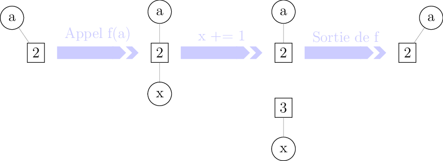

5.4. Fonctions¶
Une fonction est un bloc d’instructions que l’on peut appeler à tout moment d’un programme. Les fonctions ont plusieurs intérêts, notamment :
la réutilisation du code : éviter de répéter les mêmes séries d’instructions à plusieurs endroits d’un programme ;
la modularité : découper une tâche complexe en plusieurs sous-tâches plus simples.
5.4.1. Définir une fonction¶
Au cours des chapitres précédents, on a déjà rencontré de nombreuses fonctions telles que print ou len. Chacune de ces fonctions reçoit un argument et effectue une action (la fonction print affiche un objet à l’écran) ou renvoie une valeur (la fonction len renvoie la taille d’un itérable).
Jusqu’à maintenant, on s’est contenté de faire appel à des fonctions prédéfinies. Mais on peut également définir ses propres fonctions : il faut alors déclarer ces fonctions avant de les utiliser. De manière générale, la syntaxe d’une déclaration de fonctions est la suivante.
def <nom_fonction>(<paramètres>): # En-tête de la fonction
<instruction1>
<instruction2> # Corps de la fonction
...
return <valeur>
On décrit dans le corps de la fonction les traitements à effectuer sur les paramètres et on spécifie la valeur que doit renvoyer la fonction.
Considérons l’exemple simple suivant.
In [1]: def factorielle(n):
...: a = 1
...: for k in range(1, n+1):
...: a *= k
...: return a
...:
La fonction factorielle prend en argument un objet n (que l’on supposera être un entier naturel), calcule la factorielle de n à l’aide d’une variable a et renvoie cette valeur.
On constate que rien ne se passe lorsque la fonction est déclarée. Il faut appeler la fonction en fournissant une valeur à l’entier n pour que le code soit exécuté.
In [2]: factorielle(5)
Out[2]: 120
In [3]: factorielle(7)
Out[3]: 5040
Note
Il faut bien faire la différence entre la déclaration et l’appel de la fonction. Lorsqu’une fonction est déclarée, aucun code n’est exécuté. Il faut appeler la fonction pour que le code soit exécuté.
5.4.2. L’instruction return¶
On « sort » de la fonction dès qu’on recontre une instruction return : en particulier, les instructions suivant un return ne sont pas exécutées.
In [4]: def test(n):
...: if n % 2 == 0:
...: return "n est un multiple de 2"
...: if n % 3 ==0:
...: return "n est un multiple de 3"
...: return "Bidon"
...:
In [5]: test(4)
Out[5]: 'n est un multiple de 2'
In [6]: test(9)
Out[6]: 'n est un multiple de 3'
In [7]: test(6)
Out[7]: 'n est un multiple de 2'
In [8]: test(11)
Out[8]: 'Bidon'
On peut cependant utiliser ceci à notre avantage : par exemple, pour sortir d’une boucle for avant d’avoir accompli toutes les itérations.
In [9]: from math import sqrt, floor
In [10]: def est_premier(n):
....: if n <= 1:
....: return False
....: for d in range(2, floor(sqrt(n)) + 1):
....: if n % d == 0:
....: return False
....: return True
....:
In [11]: print([(n, est_premier(n)) for n in range(10)])
[(0, False), (1, False), (2, True), (3, True), (4, False), (5, True), (6, False), (7, True), (8, False), (9, False)]
Une fonction peut ne pas contenir d’instruction return ou peut ne renvoyer aucune valeur. En fait, si on ne renvoie pas explicitement de valeur, Python renverra par défaut la valeur particulière None.
In [12]: def f(x):
....: x**2
....:
In [13]: print(f(2))
None
In [14]: def g(x):
....: 2 * x
....: return
....:
In [15]: print(g(2))
None
Avertissement
Une erreur de débutant consiste à confondre les utilisations de print et return : une fonction ne comportant qu’un print et pas de return ne fera qu’afficher un résultat à l’écran mais ne renverra aucune valeur.
In [16]: def bidon():
....: print(1)
....: return 2
....:
In [17]: a = bidon() # La fonction bidon affiche bien 1
1
In [18]: a # Mais elle a renvoyé la valeur 2
Out[18]: 2
La plupart du temps, on préfèrera utiliser utiliser return plutôt que print : l’objet affiché par print est en quelque sorte « perdu » pour le reste du programme s’il n’a pas été renvoyé via return.
In [19]: def liste_carres1(n):
....: print([k**2 for k in range(1, n+1)])
....:
In [20]: def liste_carres2(n):
....: return [k**2 for k in range(1, n+1)]
....:
# Avec la première version, la liste des carrés est affichée mais on ne peut plus rien en faire
In [21]: liste_carres1(10)
[1, 4, 9, 16, 25, 36, 49, 64, 81, 100]
# En effet, la fonction renvoie None
In [22]: print(liste_carres1(10))
[1, 4, 9, 16, 25, 36, 49, 64, 81, 100]
None
# Avec la deuxième version, on peut par exemple calculer la somme des carrés des premiers entiers
In [23]: sum(liste_carres2(10))
Out[23]: 385
5.4.3. Paramètres et arguments¶
Une fonction peut avoir zéro, un ou plusieurs paramètres [1].
Note
Bien que les termes paramètres et arguments soient souvent confondus, il existe une nuance dont nous tiendrons compte dans ce chapitre : les paramètres sont les noms intervenant dans l’en-tête de la fonction tandis que les arguments sont les valeurs passées à la fonction lors de son appel.
In [24]: def add(a, b): # Les paramètres sont a et b
....: return a + b
....:
In [25]: add(5, 10) # Les arguments sont 5 et 10
Out[25]: 15
De même que pour les variables, les noms des paramètres doivent refléter leur utilisation pour que le code soit plus lisible. Par ailleurs, on peut passer des arguments à une fonction en utilisant les noms des paramètres, ce qui rend le code encore plus explicite.
In [26]: def nom_complet(prenom, nom):
....: return prenom[0].upper() + prenom[1:].lower() + ' ' + nom.upper()
....:
In [27]: nom_complet(prenom='james', nom='bond')
Out[27]: 'James BOND'
L’emploi d\”arguments nommés permet de passer les arguments dans un ordre différent de l’ordre des paramètres dans l’en-tête de la fonction.
In [28]: nom_complet(nom='PrOuSt', prenom='MARcel')
Out[28]: 'Marcel PROUST'
Il est possible de donner des valeurs par défaut aux paramètres d’une fonction : les arguments correspondants ne sont plus alors requis lors de l’appel de la fonction.
In [29]: def nom_complet(prenom='Joe', nom='Bob'):
....: return prenom[0].upper() + prenom[1:].lower() + ' ' + nom.upper()
....:
In [30]: nom_complet()
Out[30]: 'Joe BOB'
In [31]: nom_complet('ulysse')
Out[31]: 'Ulysse BOB'
In [32]: nom_complet(nom='capet')
Out[32]: 'Joe CAPET'
Dans l’en-tête d’une fonction les paramètres avec des valeurs par défaut doivent toujours suivre les paramètres sans valeurs par défaut sous peine de déclencher une erreur de syntaxe.
In [33]: def toto(a=1, b, c=2):
....: pass
....:
Cell In[33], line 1
def toto(a=1, b, c=2):
^
SyntaxError: non-default argument follows default argument
Le but est d’éviter toute ambiguïté. En effet, quels seraient les arguments passés lors de l’appel de fonction toto(5, 6) ? a=1, b=5 et c=6 ou bien a=5, b=6 et c=2 ?
5.4.4. Portée des variables¶
Une fonction peut utiliser des variables définies à l’extérieur de cette fonction.
In [34]: a = 2
In [35]: def f(x):
....: return a * x
....:
In [36]: f(5)
Out[36]: 10
On dit que les variables définies à l’extérieur d’une fonction sont des variables globales.
Note
De manière générale, il est plutôt déconseillé d’utiliser des variables globales à l’intérieur d’une fonction. Il est par exemple plus difficile de tester ou débugger une fonction faisant appel à des variables globales : en plus de chercher les bugs à l’intérieur de la fonction, il faudra examiner tous les endroits où ces variables globales sont potentiellement modifiées, ce qui peut devenir un vrai casse-tête dans un programme complexe.
Avertissement
Si on veut utiliser une variable globale à l’intérieur d’une fonction, il faut que celle-ci soit déclarée avant l’appel de cette fonction.
In [37]: def f(x):
....: return b * x
....:
In [38]: f(5)
Out[38]: 30
In [39]: b = 2
Considérons maintenant l’exemple suivant.
In [40]: a = 1
In [41]: def f():
....: a = 2
....: return None
....:
In [42]: a
Out[42]: 1
In [43]: f()
In [44]: a # a vaut toujours 1
Out[44]: 1
On dit que les variables à l’intérieur d’une fonction sont des variables locales. Cela signifie en particulier que des opérations effectuées sur une variable d’un certain nom à l’intérieur d’une fonction ne modifient pas une variable du même nom à l’extérieur de cette fonction.
Note
On évitera cependant de donner des noms identiques à des variables locales et globales de manière à éviter toute confusion.
Quand il existe des variables locales et globales de même nom, la préférence est donnée aux variables locales à l’intérieur de la fonction.
In [45]: a = 1
In [46]: def f(x):
....: a = 3
....: return a + x # la variable locale a est utilisée et non la variable globale a
....:
In [47]: f(5)
Out[47]: 8
On ne peut pas accéder à des variables locales à l’extérieur de la fonction où elles sont définies.
In [48]: def f():
....: c = 2
....: return None
....:
In [49]: f()
In [50]: c # c est inconnu à l'extérieur de la fonction
Out[50]: 't'
On peut donc également voir les variables locales comme des variables temporaires dont l’existence n’est assurée qu’à l’intérieur de la fonction où elles interviennent.
On peut néanmoins modifier une variable globale à l’intérieur d’une fonction : on utilise alors le mot-clé global.
In [51]: a = 1
In [52]: def f():
....: global a
....: a = 2
....: return None
....:
In [53]: a
Out[53]: 1
In [54]: f()
In [55]: a # a vaut bien 2
Out[55]: 2
Les paramètres d’une fonction ont également une portée locale. On ne peut accéder à une variable locale à l’extérieur de la fonction où elle est définie.
In [56]: def f(c):
....: return 2 * c
....:
In [57]: c # c est inconnu à l'extérieur de la fonction
Out[57]: 't'
Enfin, un paramètre ne peut être déclaré comme variable global à l’intérieur d’une fonction.
In [58]: def f(g):
....: global g
....:
Cell In[58], line 2
global g
^
SyntaxError: name 'g' is parameter and global
5.4.5. Fonctions et mutabilité¶
Considérons ce premier exemple où l’argument est un entier.
In [59]: def f(x):
....: x += 1
....:
In [60]: a = 2
In [61]: f(a)
In [62]: a # la variable a n'est pas modifiée
Out[62]: 2
Et maintenant, un deuxième exemple où l’argument est une liste.
In [63]: def g(li):
....: li.append(3)
....:
In [64]: lst = [1, 2]
In [65]: g(lst)
In [66]: lst # la variable lst a été modifiée
Out[66]: [1, 2, 3]
Le résultat du deuxième exemple peut sembler étrange puisqu’une variable globale a été modifiée à l’intérieur d’une fonction. Pour expliquer cette différence de comportement, il faut comprendre plus en détail comment sont passés les arguments à une fonction et faire une distinction entre les objets mutables et immutables.
Lors de l’exécution des instructions
f(a)etg(lst), les emplacements en mémoire dans lesquels sont stockés les objets associés aux variablesaetlst(c’est-à-dire l’entier2et la lst[1, 2]) sont passés aux fonctionsfetget les paramètresxetlipointent alors vers ces emplacements en mémoire.Puisqu’un entier est un objet immutable, l’instruction
x += 1fait pointer le paramètrexvers un nouvel emplacement mémoire où est stocké l’entier3. Cependant, a variableapointe toujours vers l’ancien emplacement en mémoire et est donc toujours associée à l’entier2.

Par contre, une liste étant un objet mutable, l’instruction
li.append(3)modifie l’objet stocké à l’emplacement en mémoire vers lequel pointeli. Cet objet vaut alors[1, 2, 3]. Mais la variablelstpointe toujours vers le même emplacement en mémoire et est donc associé à cet objet modifié.
On se convaincra plus facilement en utilisant la fonction id qui renvoie l’emplacement où est stocké un objet en mémoire et l’opérateur is qui teste si deux objets sont physiquement égaux (c’est-à-dire s’ils occupent le même emplacement en mémoire).
In [67]: def f(x):
....: print('x début fonction f', id(x), x is a)
....: x += 1
....: print('x fin fonction f', id(x), x is a)
....:
In [68]: a = 2
In [69]: print('a avant appel fonction f', id(a))
a avant appel fonction f 140703447966536
In [70]: f(a)
x début fonction f 140703447966536 True
x fin fonction f 140703447966568 False
In [71]: print('a après appel fonction f', id(a))
a après appel fonction f 140703447966536
In [72]: a
Out[72]: 2
In [73]: def g(li):
....: print('li début fonction g', id(li), lst is li)
....: li.append('toto')
....: print('li fin fonction g', id(li), lst is li)
....:
In [74]: lst = [1, 2, 3]
In [75]: print('lst avant appel fonction g', id(lst))
lst avant appel fonction g 2223621798080
In [76]: g(lst)
li début fonction g 2223621798080 True
li fin fonction g 2223621798080 True
In [77]: print('lst après appel fonction g', id(lst))
lst après appel fonction g 2223621798080
In [78]: lst
Out[78]: [1, 2, 3, 'toto']
Finalement, on peut résumer les choses de la manière suivante.
Astuce
Un objet mutable peut-être modifé s’il est passé en argument à une fonction alors que ce ne sera jamais le cas pour un objet immutable.
Enfin, soulignons qu’il peut se passer des choses étranges lorsque l’on utilise des arguments par défaut mutables.
In [79]: def pizza(supplements, base=['jambon', 'fromage']):
....: base.extend(supplements)
....: return base
....:
# Jusqu'ici tout va bien
In [80]: print(pizza(['pepperoni', 'poivrons']))
['jambon', 'fromage', 'pepperoni', 'poivrons']
In [81]: print(pizza(['champignons'], ['jambon']))
['jambon', 'champignons']
# Ca devient bizarre
In [82]: print(pizza(['anchois', 'olives']))
['jambon', 'fromage', 'pepperoni', 'poivrons', 'anchois', 'olives']
In [83]: print(pizza(['champignons']))
['jambon', 'fromage', 'pepperoni', 'poivrons', 'anchois', 'olives', 'champignons']
# Ca redevient normal
In [84]: print(pizza(['anchois', 'olives'], ['jambon', 'oeuf', 'fromage']))
['jambon', 'oeuf', 'fromage', 'anchois', 'olives']
Il faut comprendre que la liste servant d’argument par défaut est créée une fois pour toute à la déclaration de la fonction et non à chaque appel de la fonction. Comme il s’agit d’un objet mutable, chaque appel de la fonction modifie cette liste. A chaque appel de la fonction, c’est donc cette nouvelle liste qui sert d’argument par défaut et non celle définie dans l’en-tête de la fonction.
5.4.6. Une fonction est un objet¶
Il est important de noter qu’en Python, les fonctions sont des objets commes les autres (entiers, tuples, …). Notamment, une fonction possède un type.
In [85]: def f(x):
....: return 2 * x
....:
In [86]: type(f)
Out[86]: function
Ceci est important car on peut par exemple utiliser une fonction comme un argument d’une autre fonction.
In [87]: def appliquer(f, x):
....: return f(x)
....:
In [88]: def f(x):
....: return 2 * x
....:
In [89]: appliquer(f, 5)
Out[89]: 10
On peut également créer une fonction qui renvoie une autre fonction.
In [90]: def multiplier_par(a):
....: def f(x):
....: return a * x
....: return f
....:
In [91]: multiplier_par(2)(5)
Out[91]: 10
5.4.7. Documentation d’une fonction¶
La plupart des fonctions disponibles de manière standard dans Python ou dans des modules « officiels » sont documentées. On accède à la documentation d’une fonction via la fonction help.
In [92]: help(len)
Help on built-in function len in module builtins:
len(obj, /)
Return the number of items in a container.
In [93]: from math import exp
In [94]: help(exp)
Help on built-in function exp in module math:
exp(x, /)
Return e raised to the power of x.
Quand on définit ses propres fonctions, il faut prendre également prendre l’habitude de les documenter. Il s’agit :
de définir l’action de la fonction;
de préciser le type des paramètres ;
de spécifier le cas échéant la valeur de retour et son type.
On documente une fonction à l’aide d’une chaîne de caractère spéciale appelée docstring placée directement sous l’entête de la fonction. Comme pour les fonctions prédéfinies, on peut accéder à la documentation de ses propres fonctions via la fonction help.
In [95]: def minimum(a, b):
....: """
....: Calcule le minimum de a et b
....: Paramètres : deux valeurs numériques a et b
....: Revoie : le plus petit des deux entiers a et b
....: """
....: if a < b:
....: return a
....: return b
....:
In [96]: help(minimum)
Help on function minimum in module __main__:
minimum(a, b)
Calcule le minimum de a et b
Paramètres : deux valeurs numériques a et b
Revoie : le plus petit des deux entiers a et b
Le fait de documenter ses fonctions peut sembler être une perte de temps au premier abord. Mais la documentation est essentielle pour au moins deux raisons.
Il faut penser que d’autres personnes voudront utiliser votre code : elles ne sont pas censées se plonger dans votre code pour deviner à quoi servent vos fonction et comment les utiliser.
Si vous vous replongez quelques mois après dans votre code pour débugger ou améliorer vos fonctions, il y a de fortes chances que vous ne vous vous souveniez plus de vos intentions au moment où vous les avez écrites.
En plus de la docstring, il peut être utile de documenter une fonction à l’aide de commentaires.
À faire
renvoyer vers commentaires
5.4.8. Effets de bord¶
En plus de renvoyer une valeur, une fonction peut entraîner des modifications au-delà de sa portée comme :
modifier des variables globales ;
modifier des arguments mutables ;
afficher des informations à l’écran ;
enregistrer des données dans un fichier.
On parle alors d\”effet de bord.
Voici une fonction avec effet de bord. Elle modifie en effet la variable globale x.
In [97]: x = 1
In [98]: def add():
....: global x
....: x += 1
....: return 3
....:
In [99]: add()
Out[99]: 3
In [100]: x
Out[100]: 2
Voici une fonction sans effet de bord.
In [101]: x=1
In [102]: def add(y):
.....: return y + 1
.....:
In [103]: x = 1
In [104]: add(x)
Out[104]: 2
In [105]: x
Out[105]: 1
Les effets de bord sont à utiliser avec parcimonie : en effet, une fonction sans effet de bord aura toujours le même comportement si on lui fournit les mêmes arguments alors que ce n’est pas forcément le cas pour une fonction avec effet de bord. Lorsque l’on manipule des fonctions avec effets de bord, il peut être difficile de deviner quels sont leurs effects exacts sur l’état du programme.
5.4.9. Fonctions anonymes¶
En mathématiques, on peut parler d’une fonction de plusieurs manières.
On peut lui donner un nom : on peut par exemple considérer la fonction \(f\) telle que \(f(x)=x^2\).
Mais si on ne compte pas réutiliser plus tard cette fonction, on peut tout simplement parler de la fonction \(x\mapsto x^2\).
De la même manière, on peut nommer explicitement une fonction.
def f(x):
return x**2
On peut également utiliser une fonction anonyme (également appelée fonction lambda).
lambda x: x**2
In [106]: (lambda x: x**2)(4)
Out[106]: 16
In [107]: f = lambda x: x**2 # On peut bien sûr donner un nom à une fonction anonyme
In [108]: f(4)
Out[108]: 16
In [109]: g = lambda x, y: x**2 + y**2 # Une fonction anonyme peut avoir plus d'un argument
In [110]: g(1, 2)
Out[110]: 5
De manière générale, la syntaxe d’une fonction anonyme est la suivante.
lambda <paramètres>: <expression>
A la différence d’une fonction classique, une fonction anonyme ne nécessite pas d’instruction return : l’expression suivant : est renvoyée [2].
Les fonctions anonymes sont limitées par rapport aux fonctions classiques : elles ne peuvent pas exécuter plusieurs instructions puisque seule une expression est renvoyée. Quel est alors l’intérêt des fonctions anonymes ? Il s’agit de créer des fonctions à usage unique qui peuvent notamment servir d’arguments dans d’autres fonctions.
Par exemple, Python dispose d’une fonction map qui permet d’appliquer une fonction à chaque élément d’un objet de type itérable.
In [111]: list(map(lambda x: 2*x, [1, 2, 3])) # la fonction map renvoie un objet de type map qu'on convertit en liste
Out[111]: [2, 4, 6]
Bien entendu, on arriverait plus aisément au même résultat grâce à une liste en compréhension.
In [112]: [2 * x for x in [1, 2, 3]]
Out[112]: [2, 4, 6]
Notes